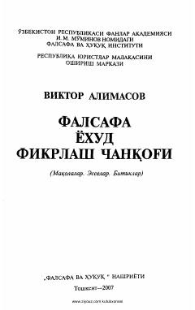

FYInsonni mustaqil fikrlashga va falsafiy mulohazalarga chorlovchi to'plam.
Mazkur kitobda felsefa tarixida iz qoldirgan mutafakkirlarning qarashlari, erk, hurfikrlik, shaxs va jamiyat haqidagi fikrlari tahlil qilinadi. Muallif o'quvchini mustaqil fikrlashga va hayotiy savollarga javob izlashga undaydi.